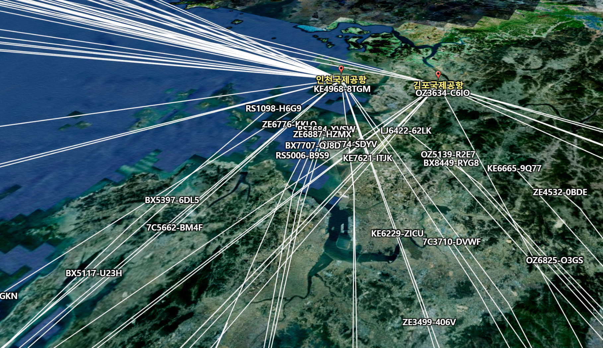
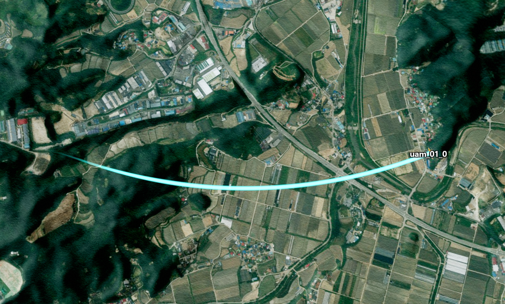
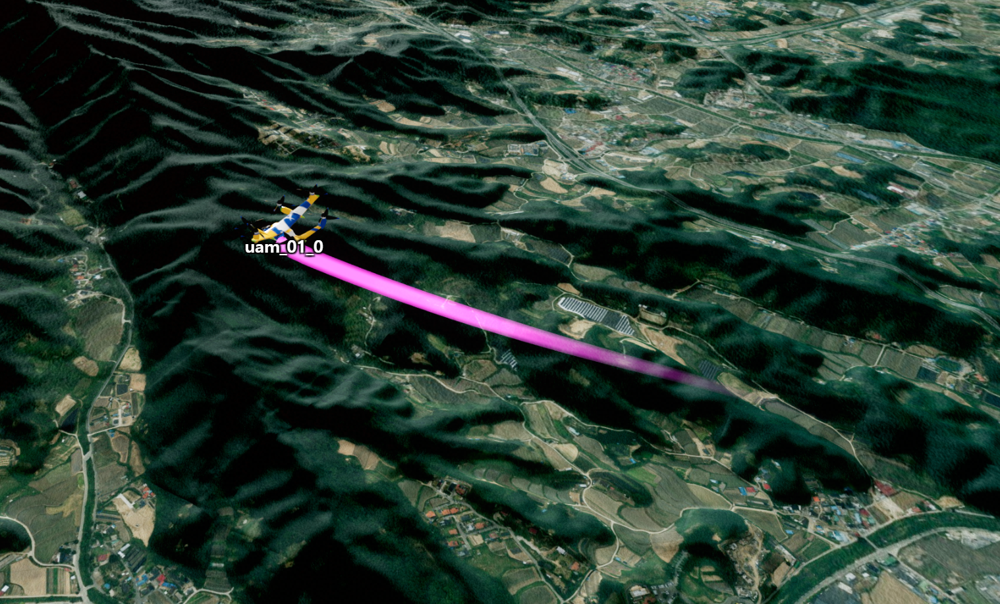

비행 경로 그리기
목차
- 컴포넌트의 비행 경로 시작하기
- U3dCumulativePath 직접 사용하기
- 경로 스타일 설정하기
- 경로 단순화 및 출력 정책 설정하기
- 경로 표시 상태 제어하기
- 기존 비행 이력 그리기
- 비행 경로 정리하기

누적 비행 경로(궤적)는 이동체가 지나온 위치를 계속 연결해 3D로 표현하는 기능입니다.U3dComponentPosition에 경로 생성을 맡기거나 U3dCumulativePath를 직접 생성해 사용할 수 있습니다.
U3dCumulativePath는 경로의 생성, 스타일과 표시 상태를 관리합니다.
경로 좌표를 단순화하는 방법과 화면에 출력할 범위는 pathStyle.tailPolicy로 설정합니다.
- 월드 좌표: GeOnDT가 화면 렌더링에 사용하는 좌표입니다.
app.geographicToVector3()로 위경도 좌표를 변환할 수 있습니다.- 누적 거리: 비행 시작점부터 현재 위치까지 이동한 전체 거리(m)입니다. 새 지점을 추가할 때 이전 값보다 같거나 큰 값을 전달합니다.
- 경로 단순화: 오래 누적된 경로의 일부 좌표를 줄여 메모리와 렌더링 부하를 낮추는 기능입니다.
1. 컴포넌트의 비행 경로 시작하기
U3dMultipleComponentLayer.addPosition으로 이동체를 만들 때 drawCumulativePath를 true로 지정하면 컴포넌트가 이동할 때 경로를 자동으로 생성하고 갱신합니다.setPosition, moveSmoothly 등 컴포넌트의 위치 변경 API를 사용하면 별도로 updatePath를 호출할 필요가 없습니다.

API
U3dMultipleComponentLayer.addPosition(opt) : 레이어에 이동 컴포넌트를 추가하는 함수
매개변수
opt(object) : 컴포넌트 생성 옵션. 필수opt.name(string) : 레이어 안에서 사용할 고유 이름. 필수opt.position(Vector3) : 초기 월드 좌표.geoPosition과 둘 중 하나를 사용opt.geoPosition(GeoPositionVector3) : 초기 위경도 좌표.position과 둘 중 하나를 사용opt.object(string) : 레이어에 등록된 3D 모델 이름. 필수opt.drawCumulativePath(boolean) : 누적 비행 경로(궤적) 생성 여부. true면 생성, false면 생성하지 않는다opt.pathwidth(number) : 초기 경로 너비
반환값
return(U3dComponentPosition) : 생성된 이동 컴포넌트
API
U3dComponentPosition.setCumulativePathStyle(opt) : 컴포넌트가 관리하는 누적 비행 경로(궤적)의 스타일을 설정하는 함수
매개변수
opt(U3dCumulativePath_StyleOpt) : 변경할 경로 스타일. 자세한 항목은 3. 경로 스타일 설정하기 참고. 필수
1. 드론 비행 경로 생성 예제
경로 시작 위치의 오프셋을 모델 크기로 자동 계산하려면 스타일을 설정하기 전에 getBoundingBox()를 호출합니다.drawOffset을 직접 지정하면 bounding box를 이용한 기본값 대신 지정한 값이 사용됩니다.
const geoPosition = {x: 126.924, y: 37.521, z: 300};
const worldPosition = app.geographicToVector3(geoPosition);
const drone = animationLayer.addPosition({
name: 'drone_01',
position: worldPosition,
object: 'drone_model',
speed: 160,
drawCumulativePath: true,
pathwidth: 5
});
drone.getBoundingBox();
drone.setCumulativePathStyle({
color: '#00ffff',
opacity: 0.8,
width: 5,
colorGradation: false,
drawOffset: 0,
smooth: false,
tailPolicy: {
simplify: true,
maxDistance: 5000
}
});
// 이후 컴포넌트 이동 API가 누적 비행 경로(궤적)를 자동으로 갱신합니다.
drone.setPosition(app.geographicToVector3({
x: 126.925,
y: 37.522,
z: 320
}));
2. U3dCumulativePath 직접 사용하기
컴포넌트 이동 API를 사용하지 않거나 외부에서 수신한 위치를 직접 그릴 때는 U3dCumulativePath를 생성하고 매 위치 갱신마다 updatePath를 호출합니다.
updatePath의 위치는 월드 좌표이고 거리는 누적 거리(m) 입니다.dist에 매번 이동한 거리만 전달하면 안 됩니다.
비행을 시작한 뒤 현재까지 이동한 전체 거리를 전달해야 경로 표시와 오래된 경로를 흐리게 만드는 기능이 올바르게 동작합니다.
API
new GeOnDT.object.U3dCumulativePath(opt) : 누적 비행 경로(궤적)를 생성하는 생성자
매개변수
opt.app(U3dApp) : 좌표 변환과 렌더링에 사용할 앱. 필수opt.scene(Scene) : 경로를 추가할 Three.js 3D 화면 객체. 필수opt.targetName(string) : 경로가 속한 이동체 이름.opt.pathStyle(U3dCumulativePath_StyleOpt) : 경로 스타일opt.initTime(number) : 초기 시간opt.initDist(number) : 초기 누적 거리(m)opt.initPositions(U3dCumulativePathPositionData[]) : 최초에 그릴 경로 이력 (경로 초기값). 이력이 없으면 입력하지 않으면 된다.opt.drawOffset(number) : 진행 방향 기준 경로 오프셋(m). 양수는 앞쪽, 음수는 뒤쪽opt.precision(number) : 경로 지점을 추가할 최소 누적 거리 차이(m)
API
U3dCumulativePath.updatePath(pos, dist, time) : 추적 중인 이동체의 위치를 반영해 비행 경로를 연장(갱신)하는 함수
매개변수
pos(WorldPosition) : 경로를 연장해서 그릴 월드 좌표. 필수dist(number) : 현재까지의 누적 이동 거리(m). 필수time(number) : 현재 경로 시간. 단위는 호출 측에서 일관되게 유지. 필수
API
U3dCumulativePath.cumulativeDist : 마지막으로 기록된 누적 거리(m)를 반환하는 읽기 전용 속성
1. 위치가 바뀔 때마다 경로 갱신 예제
경로를 화면에 그릴 준비는 내부에서 비동기로 진행됩니다.
생성 직후 show()와 updatePath()를 호출해도 문제없습니다.
아직 준비되지 않았다면 입력한 좌표를 임시로 저장했다가 준비가 끝난 뒤 경로에 반영합니다.
const path = new GeOnDT.object.U3dCumulativePath({
app,
scene: animationLayer.getScene(),
targetName: 'drone_01',
precision: 1,
pathStyle: {
color: '#00ffff',
opacity: 0.8,
width: 5
}
});
path.show();
let cumulativeDistance = 0;
let previousWorld;
function appendFlightPosition(geoPosition, timeMs) {
const world = app.geographicToVector3(geoPosition);
if (previousWorld) {
cumulativeDistance += previousWorld.distanceTo(world);
}
path.updatePath(world, cumulativeDistance, timeMs);
previousWorld = world.clone();
}
3. 경로 스타일 설정하기
경로 색상, 투명도, 너비와 위치 보정은 생성할 때 지정하거나 setPathStyle로 변경할 수 있습니다.smooth는 이전 위치와 새 위치의 중간값을 계산해 경로가 급격하게 꺾이는 것을 줄입니다.
이 과정에서 원래 위치가 조금 달라질 수 있으므로, 최신 위치를 정확히 따라야 하는 실시간 비행 경로에서는 false가 적합합니다.
API
U3dCumulativePath.setPathStyle(opt) : 여러 경로 스타일을 한 번에 변경하는 함수
매개변수
opt.color(ColorRepresentation) : 경로 색상. 기본값:'rgb(255,0,0)'opt.opacity(number) : 경로 투명도(0~1). 기본값:1opt.width(number) : 경로 너비. 기본값:3opt.colorGradation(boolean) : 그라데이션 사용 여부. 기본값:falseopt.styleFunc(function) :(pos, dist, time)을 받아 두 색상 사이에서 사용할 값(0~1)을 반환하는 함수opt.drawOffset(number) : 진행 방향 기준 경로 오프셋(m). 기본값:0opt.smooth(boolean) : 경로 스무딩 사용 여부. 기본값:falseopt.smoothFactor(number) : 이전 위치와 새 위치 사이에서 경로 위치를 정할 비율(0~1). 기본값:0.35opt.smoothMaxDistance(number) : 스무딩을 적용할 최대 지점 간 거리(m). 기본값:5opt.tailPolicy(object) : 경로 단순화 및 출력 정책. 자세한 설명은 경로 단순화 및 출력 정책 설정하기 참고
API
U3dCumulativePath.setColor(color) : 경로 색상을 변경하는 함수
U3dCumulativePath.setOpacity(opacity) : 경로 투명도를 0~1 범위로 변경하는 함수
U3dCumulativePath.setWidth(width) : 경로 너비를 변경하는 함수
U3dCumulativePath.setGradation(colorGradation) : 색상 그라데이션 사용 여부를 변경하는 함수
U3dCumulativePath.setSmooth(enable, factor, maxDistance) : 경로 스무딩을 변경하는 함수
1. 비행 고도에 따라 색상 바꾸기
colorGradation을 켜고 styleFunc를 지정하면 위치, 누적 거리, 시간에 따라 경로 색상을 바꿀 수 있습니다.
반환값은 0~1 범위로 제한하는 것이 안전합니다.
path.setPathStyle({
color: '#ff3300',
colorGradation: true,
styleFunc: (pos, dist, time) => {
const minHeight = 100;
const maxHeight = 1000;
return Math.max(0, Math.min(1,
(pos.z - minHeight) / (maxHeight - minHeight)
));
}
});
2. 실행 중 개별 스타일 변경 예제
const path = drone.getCumulativePath();
if (path) {
path.setColor('#ffff00');
path.setOpacity(0.6);
path.setWidth(8);
path.setGradation(false);
}
4. 경로 단순화 및 출력 정책 설정하기
tailPolicy는 오래된 경로 좌표를 얼마나 단순화할지와 경로를 화면에 어떤 범위와 모습으로 출력할지를 정하는 옵션입니다.
처음 준비할 경로 공간의 크기도 같은 옵션에서 설정할 수 있습니다.
simplify: true는 모양에 영향을 적게 주는 오래된 위치를 줄여 메모리 사용량을 낮춥니다.false는 모든 위치를 유지하므로 비행 시간이 길어질수록 메모리 사용량이 늘어납니다.
장시간 실시간 비행에는 단순화를 켜서 저장 위치를 줄이고, 필요하면 maxDistance로 화면에 보이는 범위도 제한하는 방식을 권장합니다.maxDistance는 표시 범위만 제한하므로 이 값만으로 저장 데이터가 계속 늘어나는 것을 막지는 않습니다.
API
U3dCumulativePath.setTailPolicy(opt) : 경로 단순화 및 출력 정책을 변경하는 함수
매개변수
- 단순화 정책
opt.simplify(boolean) : 경로 단순화 여부. 기본값:trueopt.perMaxNode(number) : 단순화 전 1km당 유지할 최대 노드 개수opt.simplifyEpsilon(number) : 단순화 강도. 값이 클수록 더 많이 단순화. 기본값:10opt.protectedTailNodes(number) : 최신 경로는 정밀도를 보호하기 위해 지정한 값만큼 최신 점은 단순화 제외. 기본값:64
opt.maxDistance(number) : 최신 위치부터 화면에 출력할 최대 경로 거리(m). 기본값:Infinityopt.widthFade(number) : 오래된 경로가 점점 가늘어지는 구간의 비율(0~1). 기본값:0.7,0이면 사용하지 않음opt.alphaFade(number) : 오래된 경로가 점점 투명해지는 구간의 비율(0~1). 기본값:0.3,0이면 사용하지 않음opt.onFadeOut(function) : 오래된 경로가 표시 범위에서 완전히 사라질 때 호출할 함수opt.initLength(number) : 처음에 준비할 경로 노드 개수. 경로가 가질수 있는 최대 버퍼 메모리. 장치 성능에 따라 기본값이 달라짐.opt.precision(number) : 경로 노드를 늘릴 때 사용할 배율. 한 번에 늘어나는 크기는initLength * precision
initLength를 실행 중 변경할 때는 현재 저장 공간보다 큰 값만 반영됩니다.
저장 공간을 줄이려면 경로를 제거한 뒤 새 설정으로 다시 생성해야 합니다.
1. 최근 5km 경로만 표시하는 예제
path.setTailPolicy({
simplify: true,
initLength: 3000,
precision: 2,
simplifyEpsilon: 10,
protectedTailNodes: 64,
protectCorners: true,
maxDistance: 5000,
widthFade: 0.5,
alphaFade: 0.4,
onFadeOut: (event) => {
console.log('표시 경계 누적 거리:', event.boundaryDistance);
}
});


onFadeOut의 event에는 사라진 경로의 위치를 확인할 수 있는 boundaryDistance 등이 들어 있습니다.
경로 위에 별도의 표식이나 helper를 추가했다면 boundaryDistance보다 오래된 객체를 이 함수에서 제거할 수 있습니다.
5. 경로 표시 상태 제어하기
컴포넌트가 관리하는 경로는 showCumulativeRoute와 hideCumulativeRoute로 제어합니다.
직접 만든 경로는 show와 hide를 사용합니다.
hide()는 3D 화면에서 경로를 숨기지만 저장된 경로 위치는 지우지 않습니다.
숨긴 동안 updatePath()로 받은 위치는 임시로 저장되고 show()를 호출하면 경로에 반영됩니다.
잠시 숨긴 뒤 같은 경로를 다시 표시할 목적이라면 dispose() 대신 hide()를 사용합니다.
API
U3dComponentPosition.showCumulativeRoute() : 컴포넌트의 누적 비행 경로(궤적)를 표시하는 함수
U3dComponentPosition.hideCumulativeRoute() : 컴포넌트의 누적 비행 경로(궤적)를 숨기는 함수
U3dCumulativePath.show() : 직접 생성한 경로를 표시하는 함수
U3dCumulativePath.hide() : 직접 생성한 경로를 숨기는 함수
1. 여러 드론의 경로 표시 상태 변경 예제
function setFlightPathsVisible(components, visible) {
for (const component of components) {
component.drawCumulativePath = visible;
if (visible) {
component.showCumulativeRoute();
} else {
component.hideCumulativeRoute();
}
}
}
아직 경로가 한 번도 생성되지 않은 컴포넌트에서는 showCumulativeRoute()만 호출해도 표시할 객체가 없습니다.
이후 이동 시 경로를 생성하려면 예제처럼 drawCumulativePath도 true로 설정합니다.
6. 기존 비행 이력 그리기
저장된 비행 이력을 한 번에 그릴 때는 생성자의 initPositions를 사용합니다.
각 항목의 position은 실시간 updatePath와 달리 위경도 좌표이며, dist는 해당 지점까지의 누적 거리(m)입니다.
API
U3dCumulativePath.createTrailFromPositions(positions) : 위경도 위치 이력으로 전체 경로를 생성하는 함수
매개변수
positions(U3dCumulativePathPositionData[]) : 경로 위치 데이터 배열. 필수positions[].position(GeoPositionVector3) :{x: 경도, y: 위도, z: 고도}형식의 위경도 좌표. 필수positions[].dist(number) : 해당 위치까지의 누적 거리(m). 필수positions[].time(number) : 해당 위치의 시간. 필수
위치가 30,000개를 초과하면 전체 경로에서 위치를 고르게 골라 최대 30,000개로 줄입니다.
1. 저장된 비행 이력 생성 예제
초기 이력은 경로 렌더링 준비가 끝난 뒤 자동으로 추가되므로 생성 직후 별도의 대기가 필요하지 않습니다.
const history = [
{position: {x: 126.9240, y: 37.5210, z: 300}, dist: 0, time: 0},
{position: {x: 126.9250, y: 37.5220, z: 320}, dist: 142, time: 3000},
{position: {x: 126.9260, y: 37.5230, z: 350}, dist: 287, time: 6000}
];
const historyPath = new GeOnDT.object.U3dCumulativePath({
app,
scene: animationLayer.getScene(),
targetName: 'drone_history_01',
initPositions: history,
pathStyle: {
color: '#00ffff',
width: 5,
opacity: 0.8
}
});
historyPath.show();
7. 비행 경로 정리하기
경로를 더 이상 사용하지 않으면 3D 화면 객체와 경로를 그릴 때 사용한 메모리를 정리해야 합니다.
컴포넌트가 관리하는 경로는 removeCumulativeRoute로 제거하고, 직접 만든 경로는 dispose를 호출합니다.
API
U3dComponentPosition.removeCumulativeRoute() : 컴포넌트의 누적 비행 경로(궤적)와 사용한 메모리를 정리하는 함수
U3dCumulativePath.dispose() : 직접 생성한 경로와 사용한 메모리를 완전히 정리하는 함수
1. 경로 정리 예제
const pathMap = new Map();
function disposeFlightPaths() {
for (const path of pathMap.values()) {
path.dispose();
}
pathMap.clear();
}
window.addEventListener('beforeunload', disposeFlightPaths);
레이어에서 컴포넌트를 제거하면 컴포넌트가 소유한 경로도 함께 정리됩니다.
반면 new GeOnDT.object.U3dCumulativePath()로 직접 생성한 객체는 레이어가 소유하지 않으므로 직접 dispose()해야 합니다.